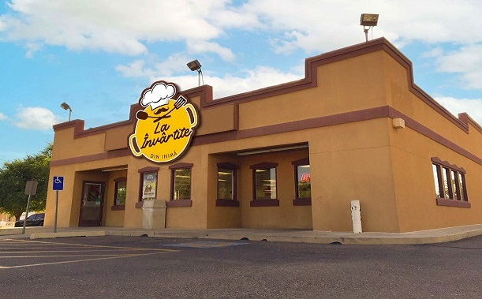
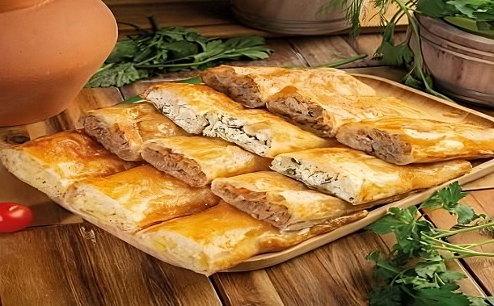
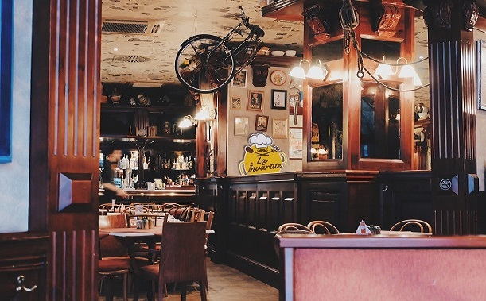

Comandă prin Glovo
Comandă prin GlovoDespre noi
|  | "La Învârtite” este o marcă comercială Din Republica Moldova, apărută în anul 2003, care din primii ani de existenţă, a devenit unul dintre liderii pe piaţa naţională și s-a plasat în rândurile companiilor cu dinamică de dezvoltare înaltă. |
| Succesul reţelei "La Învârtite” se datorează procesului de selectare calitativă a produselor şi de realizarea competentă a conţinutului meniului. Toate bucatele au un gust inedit, secretul căruia constă în procesul de preparare a acestora. Reţeaua "La Învârtite" a devenit nu doar o companie prosperă ci şi un simbol al calităţii. |  |
|  | Design-ul restaurantelor este conceput în aşa fel ca să creeze o atmosferă modernă, caldă, confortabilă şi în acelaşi timp să întruchipeze eleganţa "Oraşului mare”. "La Învârtite” este un loc ideal pentru întîlniri de afaceri şi întrevederi cu prietenii, pentru odihna familiilor cu copii şi pentru conversaţii sentimentale, este alegerea tuturor vârstelor. |


 +373 022-12-12-12
+373 022-12-12-12